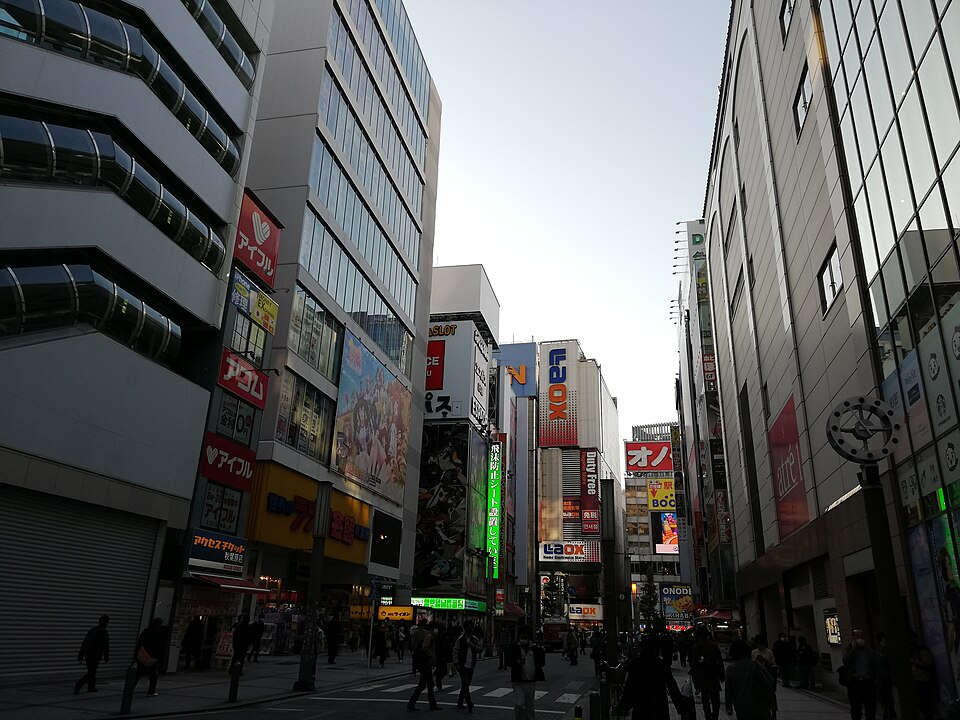

<title>Akihabara for Yulia and Stefan</title>
<meta name="claude:viewport-fit-sides" content="cover">
<meta name="robots" content="noindex,nofollow">
<link rel="preconnect" href="https://fonts.googleapis.com"><link rel="preconnect" href="https://fonts.gstatic.com" crossorigin>
<link rel="stylesheet" href="https://fonts.googleapis.com/css2?family=Inter:wght@500;700;900&display=swap">
<style>
/* Layout: red poster hero, then short blocks: the day's clock, three kinds of places to pick from, lunch if wanted. Same look as the Sam and Nikki page. */
:root{
  --bg:#ffffff; --ink:#1a1a1a; --mute:#5c5c5c; --line:#e6e6e6;
  --red:#e5382b; --wash:#fde3df; --paper:#f6f5f2; --rule:#1a1a1a;
  --font:Inter,-apple-system,"Hiragino Sans",system-ui,sans-serif;
}
@media (prefers-color-scheme: dark){:root:not([data-theme="light"]){
  --bg:#141413; --ink:#f1efea; --mute:#a9a69f; --line:#2c2b29; --wash:#3a1f1c; --paper:#1d1c1b; --rule:#f1efea; color-scheme:dark}}
:root[data-theme="dark"]{
  --bg:#141413; --ink:#f1efea; --mute:#a9a69f; --line:#2c2b29; --wash:#3a1f1c; --paper:#1d1c1b; --rule:#f1efea; color-scheme:dark}
*{box-sizing:border-box;margin:0;padding:0;min-width:0}
body{background:var(--bg);color:var(--ink);font:500 16px/1.7 var(--font);-webkit-font-smoothing:antialiased;overflow-wrap:anywhere}
a{color:inherit}
em{font-style:normal;color:var(--red)}
b,strong{font-weight:900}
img{display:block;width:100%;height:100%;object-fit:cover;max-width:100%}
.in{max-width:760px;margin:0 auto;padding-left:max(16px,env(safe-area-inset-left,0px));padding-right:max(16px,env(safe-area-inset-right,0px))}
h2{font-size:clamp(24px,5vw,32px);line-height:1.25;font-weight:900;letter-spacing:-.02em;text-wrap:balance}
.eyebrow{font-size:12px;font-weight:700;letter-spacing:.08em;text-transform:uppercase;color:var(--mute)}
section{padding-block:44px;border-top:1px solid var(--rule)}
.lead{margin-top:10px;max-width:60ch}
.chip{display:inline-block;font-size:12px;font-weight:700;border:1px solid var(--rule);border-radius:999px;padding:2px 10px;white-space:nowrap}
.chip.r{background:var(--red);border-color:var(--red);color:#fff}

.hero{background:var(--red);color:#fff;overflow:hidden}
.hero .in{padding-block:18px 22px;display:grid;gap:14px}
.hero .ht{display:flex;justify-content:space-between;flex-wrap:wrap;gap:6px 12px;font-size:12px;font-weight:700;letter-spacing:.06em;text-transform:uppercase}
.hero h1{font-size:clamp(46px,14.5vw,128px);line-height:.88;font-weight:900;letter-spacing:-.05em;text-transform:uppercase}
.mos{display:grid;grid-template-columns:1fr 1fr;grid-template-rows:150px 120px;gap:4px}
.mos figure{position:relative;overflow:hidden;background:#c8321f}
.mos figure.w{grid-column:1/3}
.mos span{position:absolute;left:8px;bottom:8px;background:#fff;color:#111;font-size:12px;font-weight:900;padding:3px 8px}
.hero .hs{font-size:18px;font-weight:700;line-height:1.45;max-width:34ch}
@media(min-width:760px){.mos{grid-template-columns:2fr 1fr 1fr;grid-template-rows:200px}.mos figure.w{grid-column:auto}}

.clock{list-style:none;margin-top:22px;display:grid;gap:0;border-left:3px solid var(--rule)}
.clock li{display:grid;grid-template-columns:92px 1fr;gap:12px;padding:12px 0 12px 16px;position:relative;border-bottom:1px solid var(--line)}
.clock li::before{content:"";position:absolute;left:-9px;top:20px;width:15px;height:15px;border-radius:50%;background:var(--bg);border:3px solid var(--rule)}
.clock li.k::before{background:var(--red);border-color:var(--red)}
.clock time{font-size:20px;font-weight:900;font-variant-numeric:tabular-nums;line-height:1.3}
.clock b{display:block;font-size:17px;line-height:1.35}
.clock p{color:var(--mute);font-size:14px;line-height:1.55;margin-top:2px}
.note{margin-top:18px;background:var(--wash);padding:12px 14px;font-size:14px;line-height:1.6}

.lanes{display:grid;gap:28px;margin-top:24px}
.lane{display:grid;gap:12px}
.lane-h{display:flex;gap:12px;align-items:center}
.lane-h i{font-style:normal;flex:none;display:grid;place-items:center;width:40px;height:40px;border-radius:50%;background:var(--red);color:#fff;font-size:18px;font-weight:900}
.lane-h h3{font-size:22px;line-height:1.25;font-weight:900}
.lane-h small{display:block;font-size:13px;font-weight:700;color:var(--mute)}
.lane .ph{aspect-ratio:16/9;overflow:hidden;border-radius:4px}
.spots{display:grid;gap:10px}
.spot{display:grid;grid-template-columns:1fr;gap:4px 12px;align-items:start;border:1px solid var(--line);border-radius:6px;padding:12px 14px;background:var(--bg)}
.spot h4{font-size:17px;line-height:1.35;font-weight:900}
.spot p{font-size:14px;line-height:1.6}
.spot .meta{display:flex;flex-wrap:wrap;gap:6px;align-items:center;margin-top:2px}
.spot .meta a{font-size:13px;font-weight:700}
@media(min-width:760px){.lane{grid-template-columns:240px 1fr;align-items:start}.lane-h{grid-column:1/-1}.lane .ph{aspect-ratio:4/3}}

.ways{list-style:none;margin-top:18px;display:grid;gap:12px}
.ways li{padding-left:14px;border-left:3px solid var(--rule)}
.ways b{display:block;font-size:17px}
.ways span{color:var(--mute);font-size:14px}
.btn{display:inline-block;margin-top:14px;background:var(--red);color:#fff;font-weight:900;text-decoration:none;padding:12px 18px;border-radius:4px}
.btn:focus-visible,a:focus-visible{outline:3px solid var(--ink);outline-offset:3px}

footer{border-top:1px solid var(--rule);padding-block:28px 40px;font-size:13px;color:var(--mute)}
footer summary{cursor:pointer;font-weight:700}
footer ul{margin:8px 0 0 18px}
</style>

<header class="hero">
  <div class="in">
    <div class="ht"><span>Friday, November 6</span><span>11:00 to 14:45</span></div>
    <h1>Akiha&shy;bara</h1>
    <div class="mos">
      <figure class="w"><span>Akihabara</span></figure>
      <figure><span>Games</span></figure>
      <figure><span>Shops</span></figure>
    </div>
    <p class="hs">Yulia and Stefan, we meet at 11:00 inside Vie de France. This page shows places we can visit. Stefan chooses.</p>
  </div>
</header>

<main>
  <section>
    <div class="in">
      <p class="eyebrow">The day in one look</p>
      <h2>Shops, a <em>shrine</em> and capsule toys</h2>
      <ol class="clock">
        <li class="k"><time>11:00</time><div><b>Meet inside Vie de France</b><p>The bakery café near Akihabara station. Use the map link in my message, because there is another Vie de France on the other side of the station. Yuuki is inside from a little before 11:00.</p></div></li>
        <li><time>11:10</time><div><b>Round 1: figures and goods</b><p>Two places from the first list below.</p></div></li>
        <li class="k"><time>12:15</time><div><b>Kanda Myojin shrine</b><p>A short walk from the shops. We look around and pick a charm.</p></div></li>
        <li><time>13:00</time><div><b>Lunch or a snack, only if you want</b><p>See the last section. We can also skip it and keep shopping.</p></div></li>
        <li><time>13:40</time><div><b>Round 2: capsule toys and games</b><p>Stefan picks what he likes from the third list.</p></div></li>
        <li class="k"><time>14:30</time><div><b>Last look, then goodbye</b><p>We finish near the station at 14:45.</p></div></li>
      </ol>
      <p class="note">This is a menu, not a fixed route. Tell Yuuki your favourites (One Piece, Pokémon, Jujutsu Kaisen, Death Note, or anything else) and we go where they are.</p>
    </div>
  </section>

  <section>
    <div class="in">
      <p class="eyebrow">Choose what sounds fun</p>
      <h2>Three kinds of places. <em>We pick as we go.</em></h2>
      <p class="lead">You do not need to buy anything. Looking at the shelves is part of the fun.</p>

      <div class="lanes">
        <div class="lane">
          <div class="lane-h"><i>A</i><h3>Figures and anime goods<small>Big shops with many series</small></h3></div>
          <div class="ph"></div>
          <div class="spots">
            <article class="spot"><h4>Animate Akihabara</h4>
              <p>Several floors of anime and manga goods from many series. The Annex building has a floor of capsule toys. Open 10:00 to 21:00 every day.</p>
              <div class="meta"><span class="chip">about 30 min</span><a href="https://www.google.com/maps/search/?api=1&query=Animate+Akihabara" target="_blank" rel="noopener">Map</a></div></article>
            <article class="spot"><h4>Akihabara Radio Kaikan</h4>
              <p>A tall building full of small shops on every floor: figures, trading cards and character goods. We choose the floors that match your favourites.</p>
              <div class="meta"><span class="chip">about 30 min</span><a href="https://www.google.com/maps/search/?api=1&query=Akihabara+Radio+Kaikan" target="_blank" rel="noopener">Map</a></div></article>
            <article class="spot"><h4>Trader, main store</h4>
              <p>Big and bright, with many prize figures at good prices.</p>
              <div class="meta"><span class="chip">about 20 min</span><a href="https://www.google.com/maps/search/?api=1&query=Trader+Akihabara+main+store" target="_blank" rel="noopener">Map</a></div></article>
          </div>
        </div>

        <div class="lane">
          <div class="lane-h"><i>B</i><h3>Anime shrine<small>Kanda Myojin</small></h3></div>
          <div class="ph"></div>
          <div class="spots">
            <article class="spot"><h4>Kanda Myojin</h4>
              <p>A large shrine about 7 minutes on foot from Akihabara station. Anime fans visit it, and the charm office sells many kinds of charms. Yuuki shows how to pray, and you can choose a charm to take home. Charm office hours are 9:00 to 18:00.</p>
              <div class="meta"><span class="chip">about 40 min</span><a href="https://www.google.com/maps/search/?api=1&query=Kanda+Myojin" target="_blank" rel="noopener">Map</a><a href="https://www.kandamyoujin.or.jp/" target="_blank" rel="noopener">Official site</a></div></article>
          </div>
        </div>

        <div class="lane">
          <div class="lane-h"><i>C</i><h3>Capsule toys and games<small>Pick, turn the handle, play</small></h3></div>
          <div class="ph"></div>
          <div class="spots">
            <article class="spot"><h4>Akihabara Gachapon Kaikan</h4>
              <p>A shop with hundreds of capsule toy machines. Opens at 11:00. Stefan can try a few and keep what comes out.</p>
              <div class="meta"><span class="chip">about 25 min</span><a href="https://www.google.com/maps/search/?api=1&query=Akihabara+Gachapon+Kaikan" target="_blank" rel="noopener">Map</a></div></article>
            <article class="spot"><h4>GiGO arcade</h4>
              <p>6th floor: retro machines like Street Fighter II, Pac-Man and pinball. 5th floor: music games. 4th floor: Mario Kart and Taiko drums.</p>
              <div class="meta"><span class="chip">about 30 min</span><a href="https://www.google.com/maps/search/?api=1&query=GiGO+Akihabara+3" target="_blank" rel="noopener">Map</a></div></article>
          </div>
        </div>
      </div>
    </div>
  </section>

  <section>
    <div class="in">
      <p class="eyebrow">If you want lunch</p>
      <h2>Tell me what you <em>like to eat</em></h2>
      <p class="lead">Lunch is not planned. If you would like to eat, send me what you would like and any allergies or dietary needs, and I will pick a place near wherever we are. This guide shows what is around Akihabara.</p>
      <a class="btn" href="https://www.animesenseijp.com/tips/where-to-eat-in-akihabara/" target="_blank" rel="noopener">Where to eat in Akihabara</a>
    </div>
  </section>

  <section>
    <div class="in">
      <p class="eyebrow">How the day works</p>
      <h2>Go at <em>your pace</em></h2>
      <ul class="ways">
        <li><b>Change your mind anytime</b><span>If you love a shop, we stay longer and skip something else.</span></li>
        <li><b>Say "break" whenever you like</b><span>There are seats and drinks on every block.</span></li>
        <li><b>Yuuki keeps the time</b><span>He gives a 5-minute heads-up before we move on.</span></li>
        <li><b>Quick check when we leave a shop</b><span>Phone, wallet, bags. Busy shops make it easy to put something down.</span></li>
      </ul>
    </div>
  </section>
</main>

<footer>
  <div class="in">
    <p>Times are approximate and can move on the day. Opening hours for Animate and Kanda Myojin come from their official sites, checked on November 5. Message Yuuki on WhatsApp if you want to change anything.</p>
    <details><summary>Photo credits</summary><ul>
      <li>Akihabara Night.jpg, CC BY 4.0, Wikimedia Commons</li>
      <li>GiGO Retro Games Akihabara 15-09-2024 (1).jpg, CC BY 4.0, Wikimedia Commons</li>
      <li>Post Earthquake Tokyo - Animate shop.jpg, CC BY-SA 2.0, Wikimedia Commons</li>
      <li>Akihabara 20211126 01.jpg, CC0, Wikimedia Commons</li>
    </ul></details>
  </div>
</footer>
